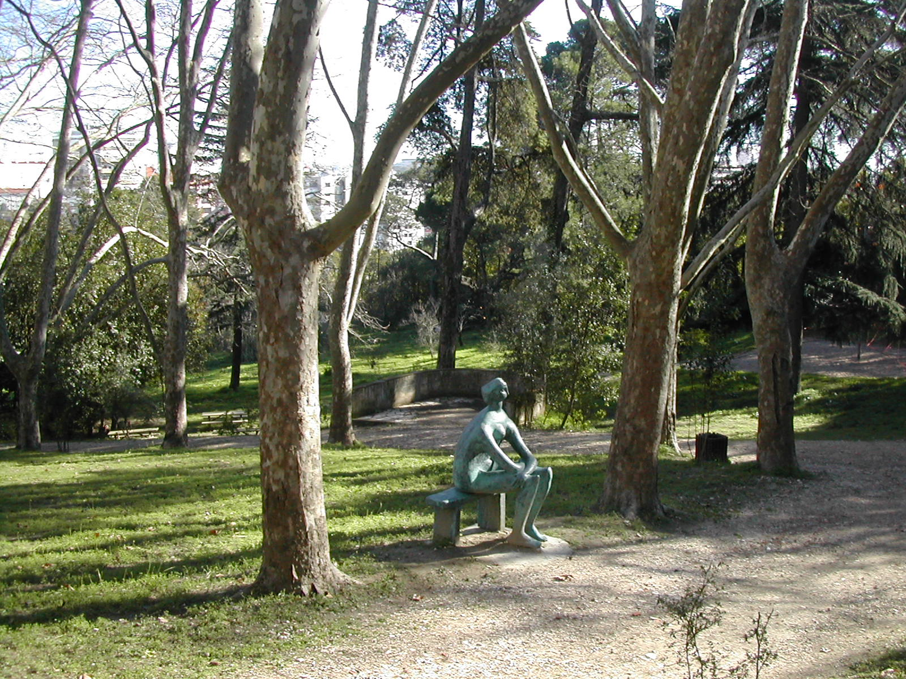

1. Monsanto
From the unavoidable Alameda Keil do Amaral, where we always have authentic dog festivals on
weekends, to Parque do Calhau and Mata de Benfica, Monsanto could not fail to be at the top
of our list of parks to take your dog in Lisbon!
With an area of 1000 hectares, there
is therefore room for everyone in the "lung" of Lisbon: both for those who love a good
"doggy day out" on a Saturday afternoon and for those who prefer a walk alone with their
dog.
2. Jardim do Campo Grande
In 2013, Lisbon's first dog park opened, precisely in Jardim do Campo Grande. For that reason
alone,
this park deserves a visit from your best friend. In recent years the Jardim do Campo Grande
has
been gaining a new life, having returned to be one of the best parks in Lisbon for a walk
with your
dog!
3. Parque Jose Gomes Ferreira (Mata de Alvalade)
In Parque José Gomes Ferreira there are about 11 hectares, with many olive and carob trees,
two
table
areas and a large playground. And, if you don't feel like bringing your lunch from home,
there's
also a kiosk with a terrace - this is, in fact, one of the meeting points for the dogs that
walk
around Parque José Gomes Ferreira (or Mata de Alvalade, as it's known), one of the best
gardens
in Lisbon to walk your dog! In other words, safe choice!
4. Parque Bemsaúde
Well hidden, with an entrance on Estrada da Luz, is the Bensaúde Park, with about 3.5
hectares
and which belonged to an old farm in that area. In addition to the largest and oldest cork
oak
tree in Lisbon, there is also a dog park where dogs can play off leash.


5. Jardim Fernando Pessa
This garden, near Avenida de Roma, has been used for several years by residents of the area
as a
canine meeting point, but in 2017, the Areeiro Parish Council inaugurated a dog park with
about
180 square meters and various equipments.